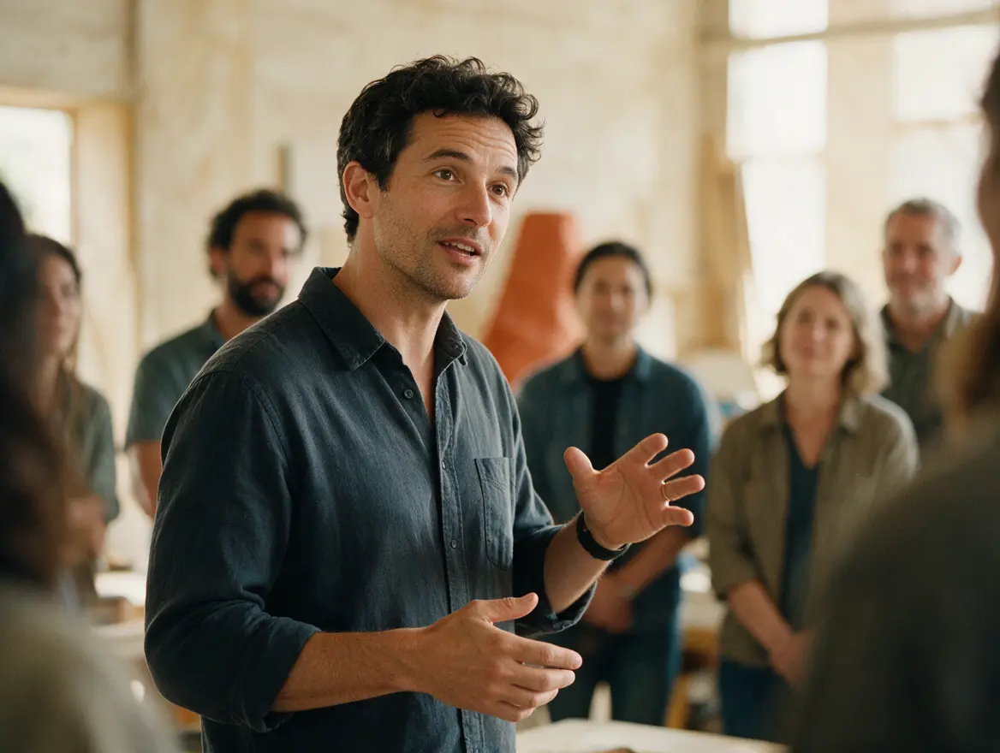
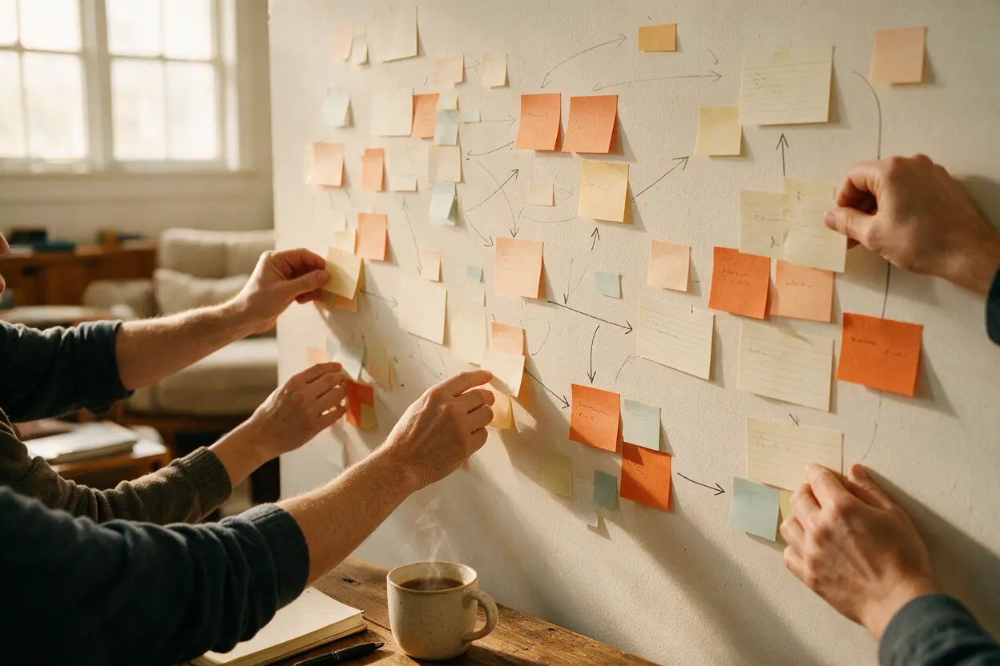
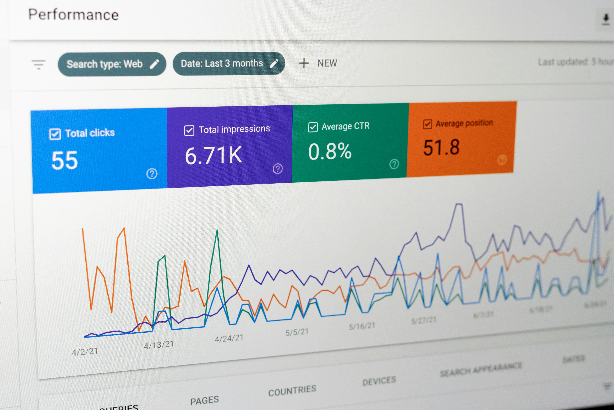

The entry point
One-day masterclass
A focused day with your experts. You leave with:
- Three real stories from inside your business
- A first short video, recorded and ready to refine
- A 30-day plan to keep publishing
Story Funnel
We train your internal experts to become visible, credible voices online, so your brand gets more enquiries, leads and sales.
The opportunity inside your business
Your employees already understand your business. We teach them how to communicate it. We make your employees become what we call knowledge & expert creators: experts whose content brings in conversations and enquiries.

The Common Trap
Many organisations invest in social media managers, content creators, agencies, paid advertising and beautiful photography and video. Yet their social pages can still become a sterile stream of: Products → Promotions → Events → Photos → “Contact us” → Buy now
The result: plenty of followers, little conversation, no real trust, and no movement toward a purchase.
Storytelling is not decoration. It is the beginning of the customer journey.
Three pillars
We identify the knowledge, people, experiences and ideas inside your organisation that can become powerful content, and teach teams how to shape them.

We help your team understand how people consume content today, and how to show up well on each platform.
Content should not simply generate views. We help you connect it to the business, from first impression to closed sale.

How we work with your team
A clear content direction built around the conversations and enquiries you want more of.
Repeatable content pillars, formats and workflows your team can keep up.
Communicating well on short-form video and today's leading platforms.
We connect your content to calls to action and a clear path to enquiry, and help you aim for more of the right conversations.
Editorial direction, content audits and coaching as your team grows.
How to start
The entry point
A focused day with your experts. You leave with:
For selected team members
Training and coaching for the people who will be your visible voices. We help you aim for:
For teams that want continued support
Regular editorial direction, content reviews and coaching as your team keeps going and grows.
About
Rahab Wambui · Creative producer and Commissioning Editor
Story Funnel is led by Rahab, who spent close to a decade as Commissioning Editor and Series Producer at CGTN Africa. Her work has reached audiences through CGTN, Al Jazeera and DW.
Documentary storytelling is the craft of helping real people speak clearly and memorably, the same challenge your experts face on camera. Her years in creator content and sales growth add the other half: how attention turns into enquiries.
Audit our social media
Click to have Story Funnel audit your social media platforms: LinkedIn, Instagram and YouTube, and we’ll tell you why your followers are not converting to sales.
Questions
Story Funnel helps organisations train their internal teams to turn their expertise into strategic content that attracts attention, builds trust and drives growth and sales.
Click on the Audit our social media button below, and share your social media accounts and contact details. We will conduct a thorough audit of your channels and prepare a review with you during the one-day masterclass.
An agency creates content for you. We build your team's ability to create it themselves, so the knowledge and the skills stay inside your organisation. When an agency leaves, it takes the knowledge with it. When we leave, your team keeps the audience and the enquiries.
We review your LinkedIn, Instagram and YouTube presence and tell you why your followers are not converting to sales. It also sets a baseline to measure progress against.
You start with a one-day masterclass where we will review your social media audit. The program for selected team members runs for 8 weeks. Ongoing Editorial advisory is available for teams that want continued support.
We measure what your team can influence: profile views, engagement from the right people and inbound enquiries. The social media audit sets a baseline, so progress is clear. We help you aim for more of the right conversations.
Our focus is training and strategy, so your internal people can create strong content themselves. Ongoing Editorial advisory is available as your team grows.
Get started